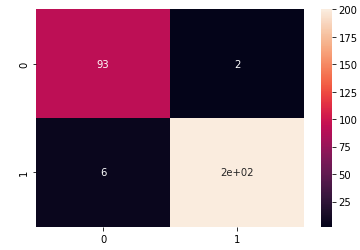
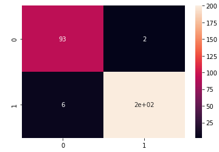

Asteroseismology
Classification
A neural network model created for the task of classifying two different
kinds of stars based on astereroseismic data
 In this project the task was to predict whether a star was a Red Giant or a Helium Burning. These two stars look the same so the differentiation comes from the seismic activity that can be recorded from the stars. I used the seismic activity tables to identify the two different star types. The main aspect of this project that connects with the capstone course was the ability to do many types of different testing and validation in order to be confident in the code to be robust. This testing is required in both projects so we do not ignore any edge cases and leave the code being useless due to the prject not recognizing these cases.
In this project the task was to predict whether a star was a Red Giant or a Helium Burning. These two stars look the same so the differentiation comes from the seismic activity that can be recorded from the stars. I used the seismic activity tables to identify the two different star types. The main aspect of this project that connects with the capstone course was the ability to do many types of different testing and validation in order to be confident in the code to be robust. This testing is required in both projects so we do not ignore any edge cases and leave the code being useless due to the prject not recognizing these cases.
The image on the left is the graph of how the training and validation data loss values changed over time. This loss gets lower the longer the model is training for and the lines of the training and the validation should be together as you want to avoid the issues of overfitting to your training data. Also the image shows the test accuracy at the end of training to show the 97% accuracy the model was able to achieve on datapoints it had not seen before. The image on the right displays the confusion matrix of the model when trying to predict on unseen data.
 
